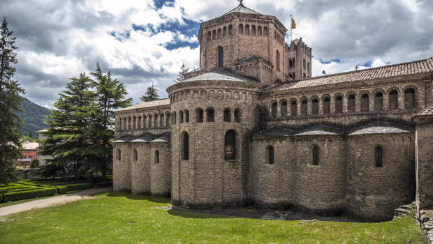

Basílica de Santa Sofía
Años: 537 D.C
Autor: Bizantino Justiniano I
Materiales:
- Mármol blanco de Tesalia (Grecia): para columnas y revestimientos.
- Pórfido de Egipto: una piedra morada muy rara, reservada normalmente para emperadores.
- Piedra amarilla de Siria: usada para decorar partes de los muros y columnas.
- Basalto y granito: para columnas gigantes y elementos estructurales.
- Ladrillos especiales fabricados en talleres imperiales: más livianos que los comunes, para sostener la gran cúpula.
- Oro, plata, marfil y piedras preciosas: en mosaicos y elementos decorativos.
Destrucción
Años: 1836
Autor: Thomas Cole
Materiales:

Monasterio benedictino de Santa Maria de Ripoll
Años: 879 D.C
Materiales:
Autor: Conde Wifredo el Velloso
- Piedra local, utiizadas para la creación de los muros, pilares y bovédas
- Capiteles esculpidos
- Piedra tallada
Pulchra Leonina
Años: 1205 - 1302
Autor: obispo Martín Fernández
Materiales:
- Piedra caliza local
- Vidrerias
Reseña
La transición que tenemos del arte antiguo al arte moderno a lo largo de la historia a sido testigo de grandes cambios como lo fueron dentro de la religión, culturales y filosóficas. En esta sección del blog podemos observar la Basílica de Santa Sofía, el Monasterio de Santa María de Ripoll y la Catedral de León, a pesar de que sabemos que cada arquitectura fue construida en diferentes épocas no muestran contexto en donde el arte por aquella época se usaba como una herramienta para poder representar el entorno, lo divino y lo incuestionable. En cada una de estas arquitecturas, podemos apreciar que siguen el mismo mensaje de subordinación: glorificar a Dios, consolidar el poder de la Iglesia y dar forma visual hacía lo celestial.
Sin embargo, cuando llegamos al siglo XIX tenemos que el contraste que nos enseña la obra “La Destrucción del Imperio” de Thomas Cole, es como emerge una sensibilidad y esto es que el arte ya no se construye y celebra sistemas, sino que lo cuestiona, la analiza, lo juzga y los advierte.
En conclusión, tenemos que en conjunto cada una de estas obras muestran como a lo largo de la historia, la transición del arte desde la perspectiva del orden y de lo divino en dirección a la exploración del caos y lo humano. En esta evolución tenemos que el arte se libera progresivamente de lo dogmas, se convierte en algo más personal, narrativo, emocional, abriendo camino al arte moderno, en donde el centro del arte ya no es Dios o el poder, sino la visión que tiene el individuo hacia el mundo.
{kind=link}
{kind=link}
{kind=link}
{kind=link}